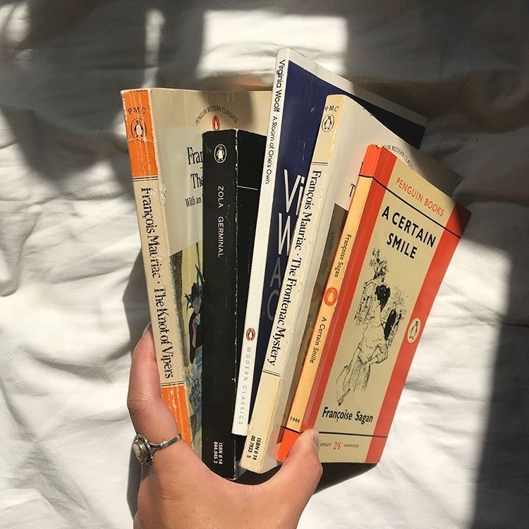

Books
Reading fits this definition if you read a book or other literature from time to time when you need to relax or have free time to kill it. Thus, reading can be considered as a hobby.


Hobbies
Make life brighter
Books
Reading fits this definition if you read a book or other literature from time to time when you need to relax or have free time to kill it. Thus, reading can be considered as a hobby.
Musik
Making music is far more than just a pleasant pastime. Simply listening to music can be soothing for the soul, mind and body – an all-round mood booster – so imagine what creating music can do to a person.
Some even say that music is an addictive, yet legal, drug!
Sport
Playing sports is not only about the banal strength and endurance of the body and its health. This is the best option to immerse yourself in yourself and find out the answers to troubling questions.
Sport is a goal, and a goal is a life that depends on it.